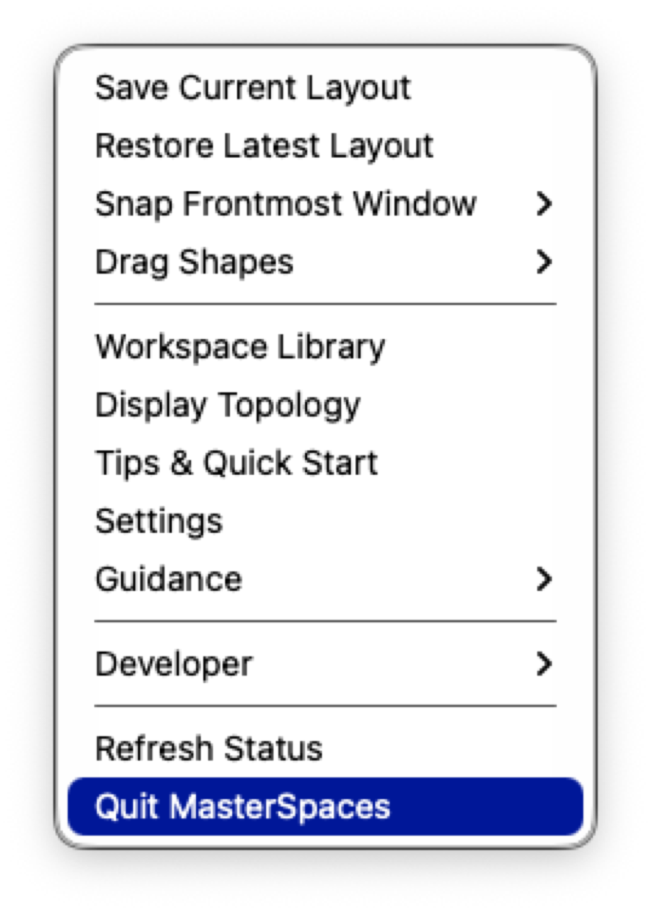
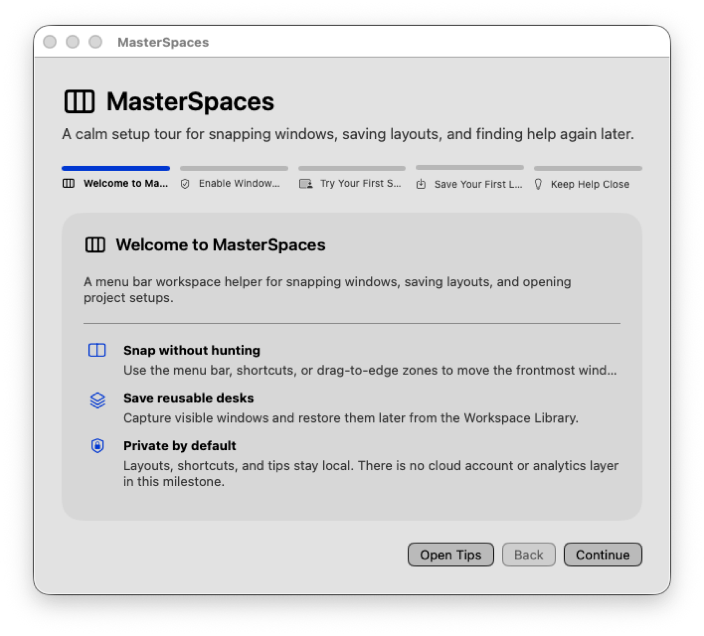
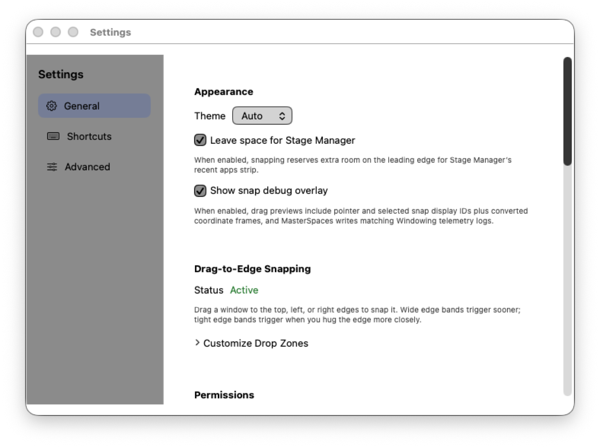

Snap without hunting
Apply halves, thirds, quarters, sixths, maximize, center, and display-aware moves from the menu bar or shortcuts.
For multi-display Macs
MasterSpaces is a focused menu bar utility for snapping the frontmost window, saving repeatable layouts, and rebuilding workspaces with apps, files, websites, and scripts.
Direct-download release candidate. Public download URL appears here after notarization and clean-machine QA pass.
The daily loop
MasterSpaces keeps the everyday window chores close to the menu bar. Use a preset, drag to an edge, save the arrangement, and restore it later when your desk gets noisy again.
Apply halves, thirds, quarters, sixths, maximize, center, and display-aware moves from the menu bar or shortcuts.
Capture useful arrangements globally, per app, or inside custom layout sets for recurring projects.
Bundle layouts with apps, documents, websites, scripts, delayed launches, and restore variants.
Reopen onboarding, Tips & Quick Start, and Settings guidance when permissions or workflows need a reset.
Onboarding explains Accessibility before asking you to move windows.
Use menu actions, shortcuts, or drag-to-edge previews on the active display.
Keep the arrangement as a layout or attach it to workspace resources.
Bring the setup back without pretending macOS Spaces are being controlled.
Real product surfaces



Scenarios
Open your coding resources, restore the editor and terminal layout, then stash the distraction window just offscreen.
Move from laptop-only to an ultrawide plus side display without forcing old saved layouts onto unrelated screens.
Snap docs, preview, chat, and notes into repeatable regions, then save the setup as a reusable review layout.
Truth in the footer, not fine print